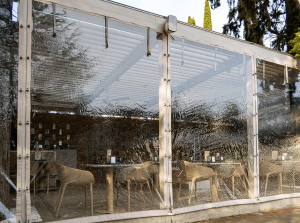
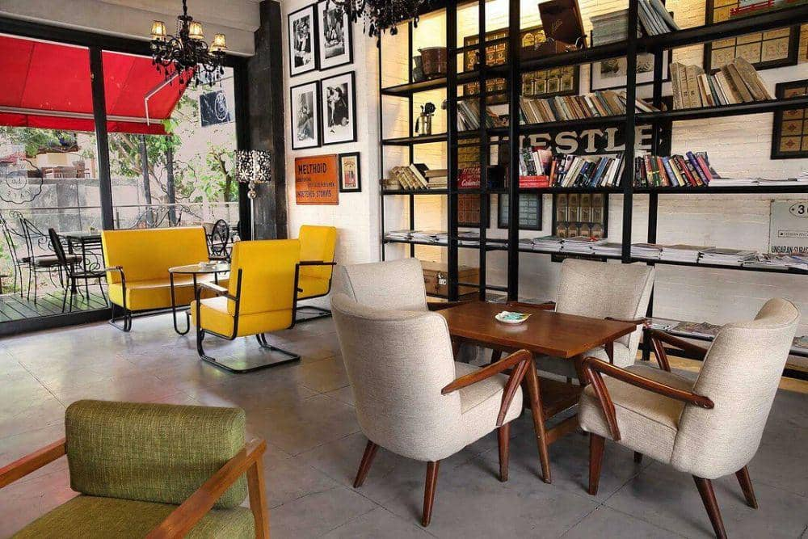

Kopi gula aren
Espresso, susu segar, gula aren Aseli Sulawesi
Kopi, sarapan, dan waktu yang tidak terburu-buru
Kedai kecil di sudut Btp. Kami menyeduh kopi dari biji lokal, memasak menu sarapan setiap pagi, lalu membiarkan sisanya berjalan seperti biasa.
Lihat menu hari ini“Tidak ada yang perlu dikejar sebelum kopi pertama.”
“Kami ingin rasanya seperti bertamu ke rumah teman yang pandai memasak.”
Kafe Djomok dimulai dari meja kayu di garasi rumah. Sekarang mejanya bertambah, tapi kebiasaannya tidak banyak berubah: roti keluar dari oven pukul tujuh, kopi diseduh satu per satu, dan siapa pun boleh duduk lama.
Kalau sedang mampir, coba sapa orang di balik bar. Mereka biasanya punya rekomendasi yang lebih jujur daripada papan menu.
Datang sendiri atau bersama teman, pilih tempat duduk yang nyaman, lalu pesan sesuatu yang ingin kamu nikmati.


Mau mampir? Isi form di bawah supaya kami bisa menyiapkan mejanya.